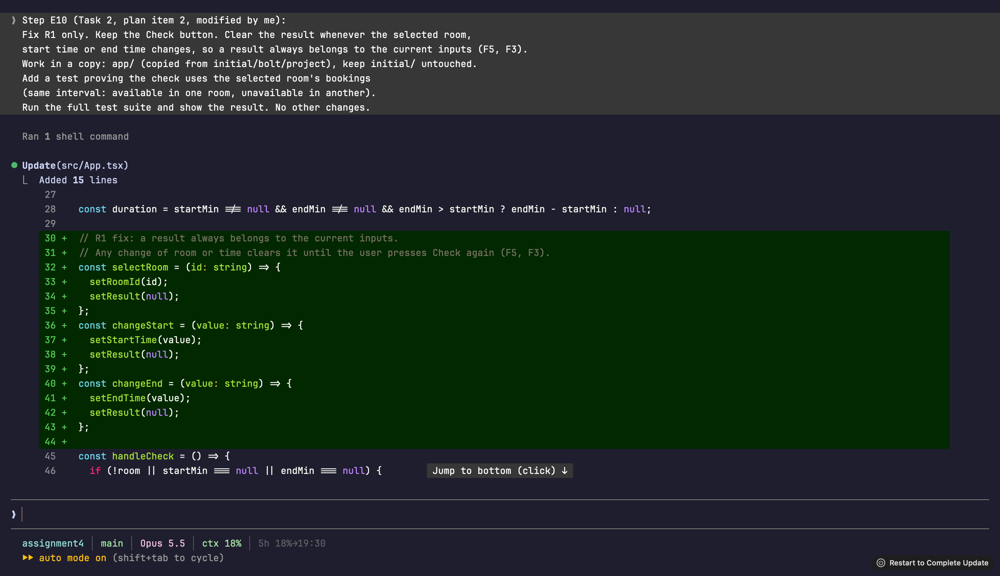
E10 prompt and diff.
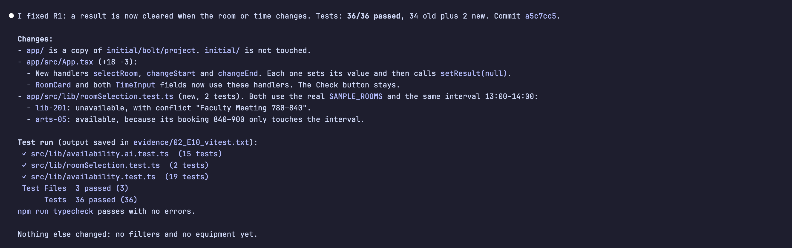
E10 answer.

S5 before fix.
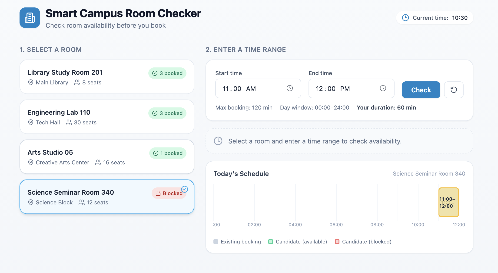
S6 after fix (my own check).
| Item | Value |
|---|---|
| AI tool and model | Claude Code (Anthropic CLI coding agent), model Claude Opus 5.5 |
| Date | 4 November 2026 (all exchanges below) |
| How it was used | Run in the terminal inside the project folder. The agent could read and edit files, run shell commands (npm, vitest, git) and drive a Firefox window for UI screenshots. Every step was a separate prompt from me; the agent committed after each step. |
| Permissions / data | Local project files only; no credentials or private data shared. Fictional room data. |
| Verification sources | My own test runs in my terminal, the browser (app on localhost), git diff, reading the changed code, saved outputs in evidence/. |
| Numbering | Continues my A3 evidence (E1–E8) with E9–E15. |
| # | Request | Output used | My decision |
|---|---|---|---|
| E9 | Task 1: analysis and plan, no code | 5 risks with file/line references, 9-step plan | Accepted R1–R5; modified plan item 2; item 6 partially |
| E10 | Fix stale result (R1/F5) | Handlers that clear the result; room-selection test | Accepted; verified in browser (S5 vs S6) and 36/36 tests |
| E11 | Equipment + pure filterRooms (F1–F4) | Model, 5-room catalog, filter module, 11 tests | Accepted; my choice: blocked rooms greyed, not hidden |
| E12 | Filter UI, empty state | Filters, empty state, disabled blocked card; 375 px fix | Accepted after browser check |
| E13 | Refactor: one source of truth | durationOf, exceedsMaxDuration, diagrams, grep counts | Accepted; re-counted duplication myself |
| E14 | Consolidate tests + UI test | Merged suite, helper tests, 3 RTL tests, mutation check | Accepted; own run 40/40 |
| E15 | Report, reflection draft, README, translation | Drafts assembled from my decisions E9–E14 | Reviewed and accepted; disclosed here |
| Problem | Action |
|---|---|
| E9 suggested removing the Check button and computing the result live | Rejected that part: kept the button, only clear the result on input change (smaller change, original UX). |
E9 suggested treating booking.py as something to clean up | Kept it unchanged as legacy reference; listed as a remaining limitation. |
| E12: the agent could not open Chrome at first, so the UI was not verified when it reported "done" | It said so explicitly; I asked it to take the screenshots, and it then used Firefox automation. I reviewed the screenshots and checked the UI myself. |
| E12: one screenshot showed two highlighted room cards | The agent checked the DOM (aria-pressed, classes): only one card was selected; the image caught a 200 ms CSS transition. Screenshot retaken. |
| E12: mobile check found a real defect — page 1102 px wide at 375 px | Confirmed it also exists in the initial version (measured); fixed with min-w-0; before/after screenshots S8/T2_8. |
| E14 reduced the test count from 47 to 40 | Checked the consolidation list case by case and ran the 34 original tests on the final code (34/34) to make sure nothing was lost. |
| Screenshot crop: first automatic crop cut the wrong region | Detected on review; re-cropped from the full original. |
Task 1 (analysis only, NO code changes).
Repo map: initial/bolt/project (React+TS+Vite, Bolt export, Practice 06/07):
src/data.ts (4 rooms), src/types.ts, src/lib/availability.ts (checkAvailability),
src/lib/time.ts, src/App.tsx, src/components/{RoomCard,ResultBanner,TimeInput,Timeline}.tsx,
src/lib/availability.test.ts + availability.ai.test.ts (34 tests, all pass).
initial/booking.py (Python can_book from A3, same rules).
Acceptance: AC1 valid time (0<=start<end<=1440, start>now), AC2 <=120 min,
AC3 blocked room rejected, AC4 no overlap (touching allowed), AC5 data not mutated,
AC6 clear feedback + responsive.
New: catalog >=4 rooms with id, name, capacity, equipment, blocked, bookings.
F1 capacity >= attendees, F2 room has ALL selected equipment, F3 blocked never available,
F4 empty state, F5 switching room refreshes result using that room's bookings.
Constraints: no login, DB, APIs, payments; fictional data; fixed now.
Observed: changing time or room after Check keeps the old result (screenshot S4).
Give: at least 3 maintainability risks with file/function references,
then a prioritized small-step improvement plan. Do not write code.
R1 stale result (App.tsx:18/30/78), R2 rule duplicated (availability.ts:28, App.tsx:28/117, ResultBanner.tsx:29, booking.py:22), R3 model cannot express equipment/filters (types.ts, App.tsx:72/77), R4 duplicated tests, R5 small defects; nine-step plan. Full text: evidence/E9_answer.md.
types.ts. Modified plan item 2: keep the Check button and only clear the result when room or time changes (smaller change, original UX, one change at a time). Item 6 partially: booking.py stays as the initial version for comparison.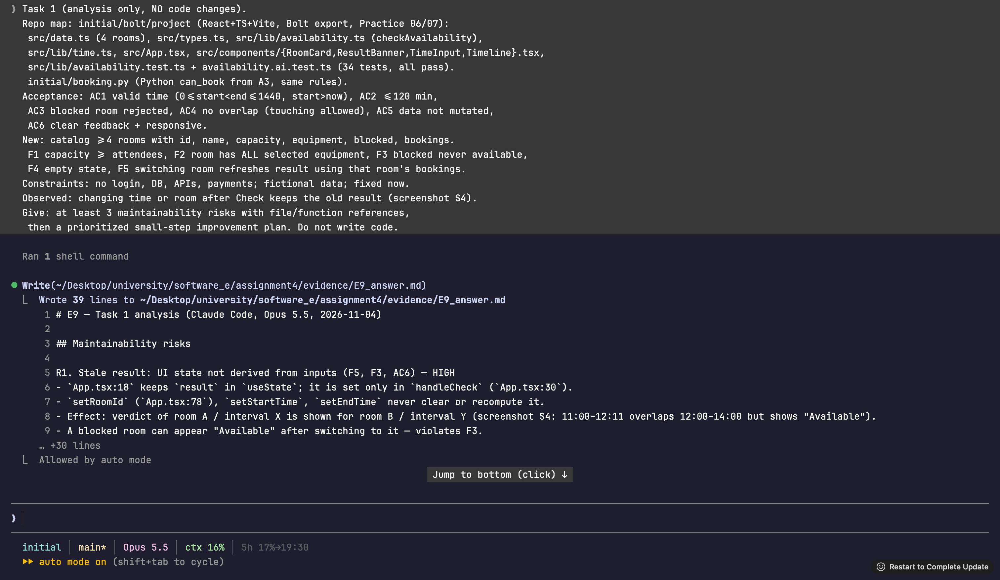
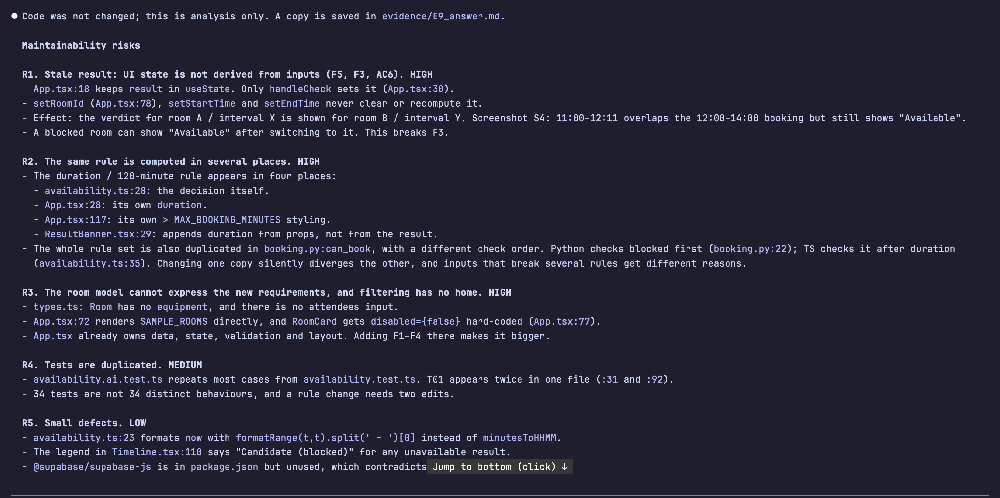
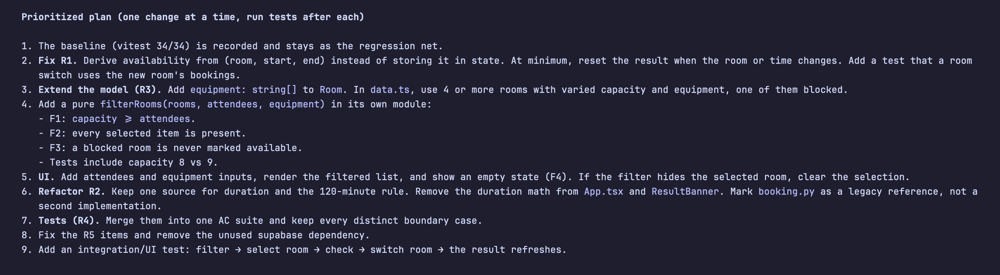
Step E10 (Task 2, plan item 2, modified by me): Fix R1 only. Keep the Check button. Clear the result whenever the selected room, start time or end time changes, so a result always belongs to the current inputs (F5, F3). Work in a copy: app/ (copied from initial/bolt/project), keep initial/ untouched. Add a test proving the check uses the selected room's bookings (same interval: available in one room, unavailable in another). Run the full test suite and show the result. No other changes.
selectRoom, changeStart, changeEnd in App.tsx each call setResult(null); new roomSelection.test.ts (13:00–14:00 unavailable in lib-201, available in arts-05). 36/36 passed. Commit a5c7cc5.
app/ in the browser: after switching to the blocked room the result is cleared (S6 vs S5). Tests in my terminal: 36/36.


Step E11 (Task 2, plan items 3–4): In app/ only. Add equipment: string[] to Room and fill data.ts with at least 4 fictional rooms: varied capacity and equipment, one blocked, each with own bookings. Create a pure module src/lib/filtering.ts with filterRooms(rooms, attendees, equipment): F1 capacity >= attendees, F2 room has ALL selected equipment, F3 blocked rooms stay in the list but are marked unavailable and cannot be selected. Do not mutate input. Add unit tests incl. exact capacity (8 for 8 attendees) vs insufficient (8 for 9), equipment subset, empty result (F4 data case). No UI changes yet. Run all tests and show the result.
Room.equipment, 5-room catalog, filterRooms → { room, selectable }[], hasSelectableRoom, 11 tests. Old fixtures received only equipment: [] (required field). 47/47. Commit 42fab21.
filtering.ts: >= for F1, every for F2. Checked in the diff that old test cases were not changed. Tests on my machine: 47/47.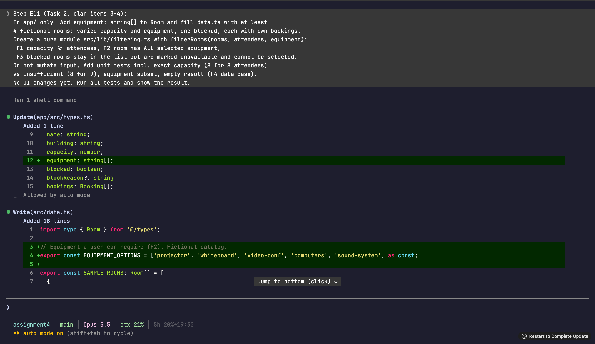
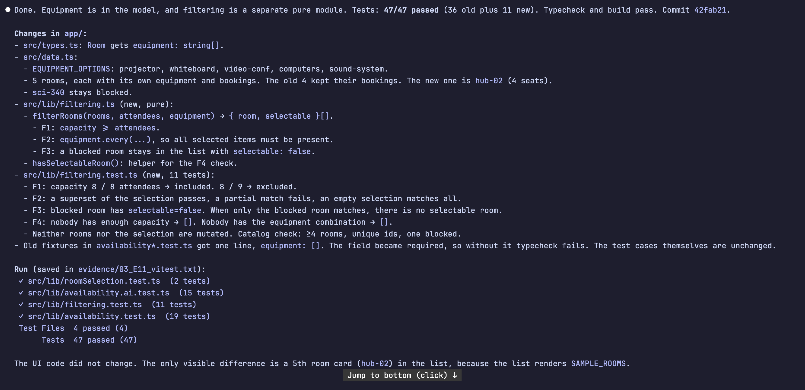
Step E12 (Task 2, plan item 5): In app/ only. Add to the UI: attendees number input (default 1) and equipment checkboxes from EQUIPMENT_OPTIONS. Render only rooms returned by filterRooms. Blocked rooms appear greyed out with "Blocked" and cannot be selected (F3). Show equipment on each room card. If no selectable room matches, show a clear empty state with a hint to change filters (F4). If the selected room is filtered out or blocked, clear the selection and the result (F5). Keep layout usable at 375px. Run all tests and build, show the result.
Follow-up (my message): "can you make the screenshots yourself" — the agent drove Firefox, captured T2_1…T2_8 and, while measuring the 375 px layout, found the overflow defect.
RoomFilters, EmptyState, updated RoomCard, parseAttendees, applyFilters in App.tsx (commit 6959292); 375 px fix min-w-0 (commit 86c6e3d); screenshot notes evidence/T2_screens_notes.md.
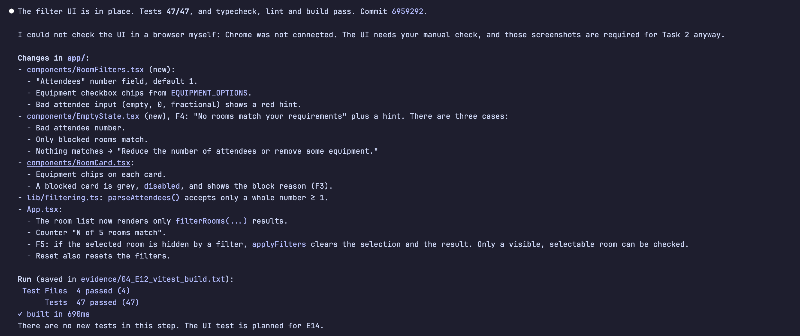
Step E13 (Task 3, plan items 6 and 8): refactor app/ without changing behaviour. Goal: clear modules — room data (data.ts), booking/availability rules (lib/availability.ts), filtering (lib/filtering.ts), UI (components/, App.tsx). Remove duplicated logic: - duration and the 120-min check are computed in App.tsx and ResultBanner as well as in availability.ts — make one source of truth; - availability.ts formats "now" via formatRange(...).split — use minutesToHHMM; - Timeline legend says "Candidate (blocked)" for any unavailable result; - remove unused @supabase/supabase-js. Mark initial/booking.py as legacy reference only (do not edit initial/). Keep all existing tests green; do not change their expectations. Show before/after module diagram, list duplicated locations removed (with how you counted), run tests, typecheck and build.
durationOf (time.ts), exceedsMaxDuration (availability.ts), result.duration in the banner; 3 duplicated locations removed, counted with grep -rnF before/after (evidence/05, 06); docs/architecture.md. 47/47. Commit 074f99c.
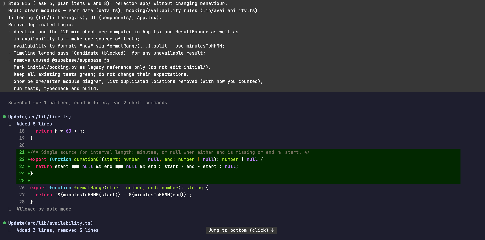
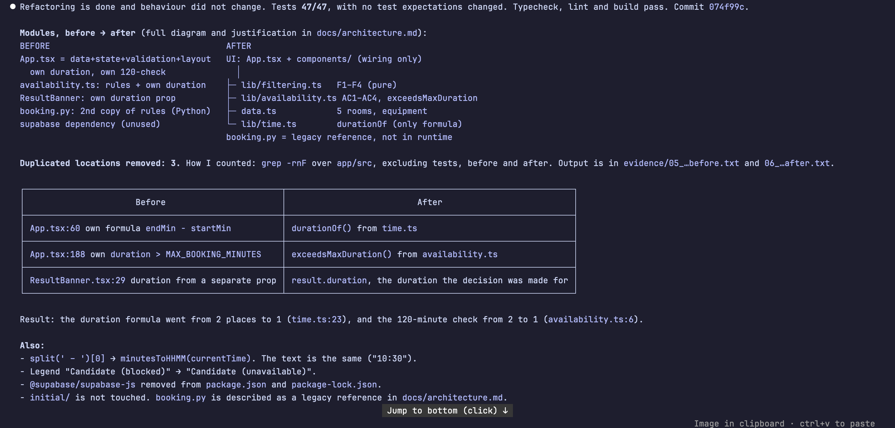
Step E14 (Task 4, plan items 7 and 9): In app/ only. Consolidate tests: merge availability.ai.test.ts into availability.test.ts keeping every distinct case (AC1–AC5 regression: 120 vs 121 min, touching vs overlapping, start == now, mutation check); remove exact duplicates and report which ones. Add unit tests for durationOf and exceedsMaxDuration. Add at least one UI/integration test with React Testing Library (jsdom): filter by attendees/equipment -> select room -> Check -> switch room -> result clears -> Check again uses the new room's bookings; and empty state for impossible filters. Show the exact commands and the pass/fail output; save it to evidence/.
Merged suite (14 duplicates removed, T13b kept), helper tests, A3 boundary cases, App.test.tsx (3 tests), mutation check (2/2 detected), original 34 tests on final code (34/34). 40/40. Commit d508845.
E14_test_consolidation.md; confirmed evidence/09 and evidence/10; ran the suite myself: 40/40. The count went from 47 to 40 on purpose — duplicates do not test new behaviour.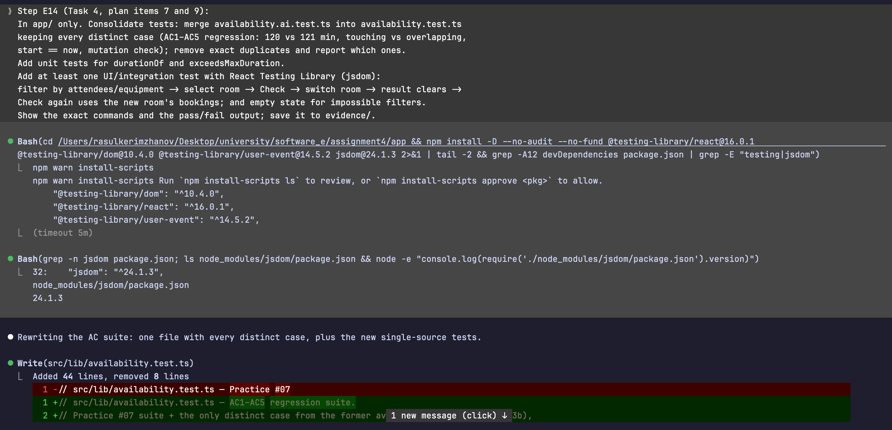
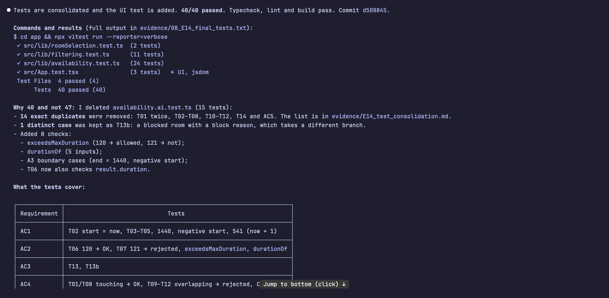
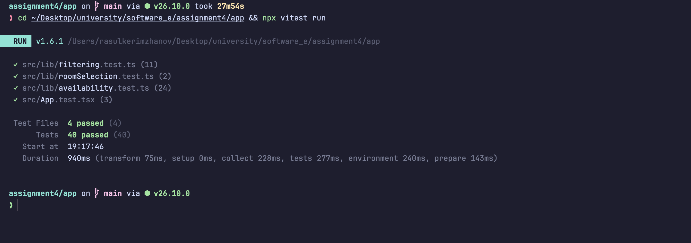
Prompts (summary): "write the reflection yourself" (from my bullet points on context, useful/incorrect advice, verification, tests, next steps); "everything must be in English — translate"; assemble README, report and this appendix from the evidence folder.
Output used: README.md, docs/reflection.md (289 words), the report PDF and this appendix.
evidence/; I checked the test counts against my own run.